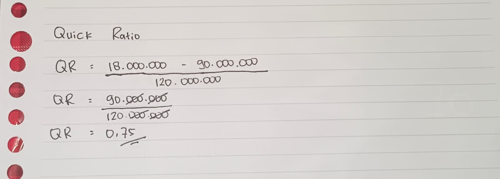

Rasio Lancar: 1,5 kali
Kondisi likuiditas cukup baik. Aset lancar yang dimiliki lebih besar daripada kewajiban lancarnya. Setiap Rp1 utang dijamin oleh Rp1,50 aset lancar.
Evaluasi Kemampuan Keuangan untuk Pengajuan Kredit Modal Kerja
Bank meminta analisis likuiditas sebelum menyetujui kredit modal kerja.
Mengukur kemampuan perusahaan membayar kewajiban jangka pendek menggunakan seluruh aset lancarnya.
Artinya, setiap Rp1 kewajiban lancar dijamin oleh Rp1,50 aset lancar.
Mengukur kemampuan perusahaan membayar kewajiban jangka pendek tanpa mengandalkan persediaan barang.
Artinya, setiap Rp1 kewajiban lancar hanya dijamin oleh Rp0,75 aset lancar di luar persediaan.

| Jenis Rasio | Hasil AI | Hasil Manual | Selisih |
|---|---|---|---|
| Rasio Lancar | 1,5 | 1,5 | 0 |
| Rasio Cepat | 0,75 | 0,75 | 0 |
Tidak terdapat selisih antara hasil perhitungan AI dan perhitungan manual karena keduanya menggunakan rumus dan data yang sama. Hal ini menunjukkan bahwa hasil perhitungan AI sesuai dengan perhitungan manual.
Kondisi likuiditas cukup baik. Aset lancar yang dimiliki lebih besar daripada kewajiban lancarnya. Setiap Rp1 utang dijamin oleh Rp1,50 aset lancar.
Toko masih bergantung pada persediaan barang untuk memenuhi kewajiban jangka pendeknya. Jika persediaan sulit terjual, toko berpotensi mengalami kesulitan dalam membayar utang jangka pendek.
Toko Sembako Berkah memiliki kemampuan likuiditas yang cukup baik berdasarkan rasio lancar, tetapi masih perlu memperbaiki rasio cepatnya.
Pengajuan kredit modal kerja dapat dipertimbangkan dengan memperhatikan kemampuan toko dalam menyediakan kas untuk membayar kewajiban jangka pendek.